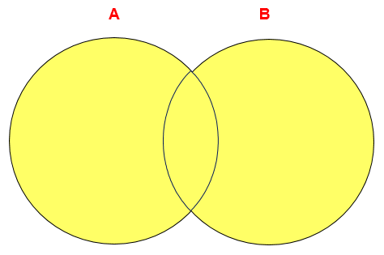

mysql基础篇-第06章-多表查询
第06章_多表查询
讲师：尚硅谷-宋红康（江湖人称：康师傅）
多表查询，也称为关联查询，指两个或更多个表一起完成查询操作。
前提条件：这些一起查询的表之间是有关系的（一对一、一对多），它们之间一定是有关联字段，这个关联字段可能建立了外键，也可能没有建立外键。比如：员工表和部门表，这两个表依靠“部门编号”进行关联。
1. 一个案例引发的多表连接
1.1 案例说明

从多个表中获取数据：

1 | #案例：查询员工的姓名及其部门名称 |

查询结果：
1 | +-----------+----------------------+ |
分析错误情况：
1 | SELECT COUNT(employee_id) FROM employees; |
我们把上述多表查询中出现的问题称为：笛卡尔积的错误。
1.2 笛卡尔积（或交叉连接）的理解
笛卡尔乘积是一个数学运算。假设我有两个集合 X 和 Y，那么 X 和 Y 的笛卡尔积就是 X 和 Y 的所有可能组合，也就是第一个对象来自于 X，第二个对象来自于 Y 的所有可能。组合的个数即为两个集合中元素个数的乘积数。

SQL92中，笛卡尔积也称为交叉连接，英文是 CROSS JOIN。在 SQL99 中也是使用 CROSS JOIN表示交叉连接。它的作用就是可以把任意表进行连接，即使这两张表不相关。在MySQL中如下情况会出现笛卡尔积：
1 | #查询员工姓名和所在部门名称 |
1.3 案例分析与问题解决
笛卡尔积的错误会在下面条件下产生：
- 省略多个表的连接条件（或关联条件）
- 连接条件（或关联条件）无效
- 所有表中的所有行互相连接
为了避免笛卡尔积， 可以在 WHERE 加入有效的连接条件。
加入连接条件后，查询语法：
1
2
3SELECT table1.column, table2.column
FROM table1, table2
WHERE table1.column1 = table2.column2; #连接条件- 在 WHERE子句中写入连接条件。
正确写法：
1
2
3
4#案例：查询员工的姓名及其部门名称
SELECT last_name, department_name
FROM employees, departments
WHERE employees.department_id = departments.department_id;在表中有相同列时，在列名之前加上表名前缀。
2. 多表查询分类讲解
分类1：等值连接 vs 非等值连接
等值连接

1 | SELECT employees.employee_id, employees.last_name, |


拓展1：多个连接条件与 AND 操作符

拓展2：区分重复的列名
- 多个表中有相同列时，必须在列名之前加上表名前缀。
- 在不同表中具有相同列名的列可以用
表名加以区分。
1 | SELECT employees.last_name, departments.department_name,employees.department_id |
拓展3：表的别名
使用别名可以简化查询。
列名前使用表名前缀可以提高查询效率。
1 | SELECT e.employee_id, e.last_name, e.department_id, |
需要注意的是，如果我们使用了表的别名，在查询字段中、过滤条件中就只能使用别名进行代替，不能使用原有的表名，否则就会报错。
阿里开发规范：【
强制】对于数据库中表记录的查询和变更，只要涉及多个表，都需要在列名前加表的别名（或 表名）进行限定。
说明：对多表进行查询记录、更新记录、删除记录时，如果对操作列没有限定表的别名（或表名），并且操作列在多个表中存在时，就会抛异常。
正例：select t1.name from table_first as t1 , table_second as t2 where t1.id=t2.id;
反例：在某业务中，由于多表关联查询语句没有加表的别名（或表名）的限制，正常运行两年后，最近在 某个表中增加一个同名字段，在预发布环境做数据库变更后，线上查询语句出现出 1052 异常：Column ‘name’ in field list is ambiguous。
拓展4：连接多个表

总结：连接 n个表,至少需要n-1个连接条件。比如，连接三个表，至少需要两个连接条件。
练习：查询出公司员工的 last_name,department_name, city
非等值连接

1 | SELECT e.last_name, e.salary, j.grade_level |


分类2：自连接 vs 非自连接

- 当table1和table2本质上是同一张表，只是用取别名的方式虚拟成两张表以代表不同的意义。然后两个表再进行内连接，外连接等查询。
题目：查询employees表，返回“Xxx works for Xxx”
1 | SELECT CONCAT(worker.last_name ,' works for ' |


练习：查询出last_name为 ‘Chen’ 的员工的 manager 的信息。
分类3：内连接 vs 外连接
除了查询满足条件的记录以外，外连接还可以查询某一方不满足条件的记录。

内连接: 合并具有同一列的两个以上的表的行, 结果集中不包含一个表与另一个表不匹配的行
外连接: 两个表在连接过程中除了返回满足连接条件的行以外还返回左（或右）表中不满足条件的行 ，这种连接称为左（或右） 外连接。没有匹配的行时, 结果表中相应的列为空(NULL)。
如果是左外连接，则连接条件中左边的表也称为
主表，右边的表称为从表。如果是右外连接，则连接条件中右边的表也称为
主表，左边的表称为从表。
SQL92：使用(+)创建连接
在 SQL92 中采用（+）代表从表所在的位置。即左或右外连接中，(+) 表示哪个是从表。
Oracle 对 SQL92 支持较好，而 MySQL 则不支持 SQL92 的外连接。
1
2
3
4
5
6
7
8
9#左外连接
SELECT last_name,department_name
FROM employees ,departments
WHERE employees.department_id = departments.department_id(+);
#右外连接
SELECT last_name,department_name
FROM employees ,departments
WHERE employees.department_id(+) = departments.department_id;而且在 SQL92 中，只有左外连接和右外连接，没有满（或全）外连接。
3. SQL99语法实现多表查询
3.1 基本语法
使用JOIN…ON子句创建连接的语法结构：
1
2
3
4SELECT table1.column, table2.column,table3.column
FROM table1
JOIN table2 ON table1 和 table2 的连接条件
JOIN table3 ON table2 和 table3 的连接条件它的嵌套逻辑类似我们使用的 FOR 循环：
1
2
3
4
5
6for t1 in table1:
for t2 in table2:
if condition1:
for t3 in table3:
if condition2:
output t1 + t2 + t3SQL99 采用的这种嵌套结构非常清爽、层次性更强、可读性更强，即使再多的表进行连接也都清晰可见。如果你采用 SQL92，可读性就会大打折扣。
语法说明：
- 可以使用 ON 子句指定额外的连接条件。
- 这个连接条件是与其它条件分开的。
- ON 子句使语句具有更高的易读性。
- 关键字 JOIN、INNER JOIN、CROSS JOIN 的含义是一样的，都表示内连接
3.2 内连接(INNER JOIN)的实现
- 语法：
1 | SELECT 字段列表 |
题目1：
1 | SELECT e.employee_id, e.last_name, e.department_id, |


题目2：
1 | SELECT employee_id, city, department_name |


3.3 外连接(OUTER JOIN)的实现
3.3.1 左外连接(LEFT OUTER JOIN)
- 语法：
1 | #实现查询结果是A |
- 举例：
1 | SELECT e.last_name, e.department_id, d.department_name |

3.3.2 右外连接(RIGHT OUTER JOIN)
- 语法：
1 | #实现查询结果是B |
- 举例：
1 | SELECT e.last_name, e.department_id, d.department_name |

需要注意的是，LEFT JOIN 和 RIGHT JOIN 只存在于 SQL99 及以后的标准中，在 SQL92 中不存在，只能用 (+) 表示。
3.3.3 满外连接(FULL OUTER JOIN)
- 满外连接的结果 = 左右表匹配的数据 + 左表没有匹配到的数据 + 右表没有匹配到的数据。
- SQL99是支持满外连接的。使用FULL JOIN 或 FULL OUTER JOIN来实现。
- 需要注意的是，MySQL不支持FULL JOIN，但是可以用 LEFT JOIN UNION RIGHT join代替。
4. UNION的使用
合并查询结果
利用UNION关键字，可以给出多条SELECT语句，并将它们的结果组合成单个结果集。合并时，两个表对应的列数和数据类型必须相同，并且相互对应。各个SELECT语句之间使用UNION或UNION ALL关键字分隔。
语法格式：
1 | SELECT column,... FROM table1 |
UNION操作符

UNION 操作符返回两个查询的结果集的并集，去除重复记录。
UNION ALL操作符
UNION ALL操作符返回两个查询的结果集的并集。对于两个结果集的重复部分，不去重。
注意：执行UNION ALL语句时所需要的资源比UNION语句少。如果明确知道合并数据后的结果数据不存在重复数据，或者不需要去除重复的数据，则尽量使用UNION ALL语句，以提高数据查询的效率。
举例：查询部门编号>90或邮箱包含a的员工信息
1 | #方式1 |
1 | #方式2 |
举例：查询中国用户中男性的信息以及美国用户中年男性的用户信息
1 | SELECT id,cname FROM t_chinamale WHERE csex='男' |
5. 7种SQL JOINS的实现

5.7.1 代码实现
1 | #中图：内连接 A∩B |
1 | #左上图：左外连接 |
1 | #右上图：右外连接 |
1 | #左中图：A - A∩B |
1 | #右中图：B-A∩B |
1 | #左下图：满外连接 |
1 | #右下图 |
5.7.2 语法格式小结
- 左中图
1 | #实现A - A∩B |
- 右中图
1 | #实现B - A∩B |
- 左下图
1 | #实现查询结果是A∪B |
- 右下图
1 | #实现A∪B - A∩B 或 (A - A∩B) ∪ （B - A∩B） |
6. SQL99语法新特性
6.1 自然连接
SQL99 在 SQL92 的基础上提供了一些特殊语法，比如 NATURAL JOIN 用来表示自然连接。我们可以把自然连接理解为 SQL92 中的等值连接。它会帮你自动查询两张连接表中所有相同的字段，然后进行等值连接。
在SQL92标准中：
1 | SELECT employee_id,last_name,department_name |
在 SQL99 中你可以写成：
1 | SELECT employee_id,last_name,department_name |
6.2 USING连接
当我们进行连接的时候，SQL99还支持使用 USING 指定数据表里的同名字段进行等值连接。但是只能配合JOIN一起使用。比如：
1 | SELECT employee_id,last_name,department_name |
你能看出与自然连接 NATURAL JOIN 不同的是，USING 指定了具体的相同的字段名称，你需要在 USING 的括号 () 中填入要指定的同名字段。同时使用 JOIN...USING 可以简化 JOIN ON 的等值连接。它与下面的 SQL 查询结果是相同的：
1 | SELECT employee_id,last_name,department_name |
7. 章节小结
表连接的约束条件可以有三种方式：WHERE, ON, USING
WHERE：适用于所有关联查询
ON：只能和JOIN一起使用，只能写关联条件。虽然关联条件可以并到WHERE中和其他条件一起写，但分开写可读性更好。USING：只能和JOIN一起使用，而且要求两个关联字段在关联表中名称一致，而且只能表示关联字段值相等
1 | #关联条件 |
注意：
我们要控制连接表的数量。多表连接就相当于嵌套 for 循环一样，非常消耗资源，会让 SQL 查询性能下降得很严重，因此不要连接不必要的表。在许多 DBMS 中，也都会有最大连接表的限制。
【强制】超过三个表禁止 join。需要 join 的字段，数据类型保持绝对一致；多表关联查询时， 保证被关联的字段需要有索引。
说明：即使双表 join 也要注意表索引、SQL 性能。
来源：阿里巴巴《Java开发手册》
附录：常用的 SQL 标准有哪些
在正式开始讲连接表的种类时，我们首先需要知道 SQL 存在不同版本的标准规范，因为不同规范下的表连接操作是有区别的。
SQL 有两个主要的标准，分别是 SQL92 和 SQL99。92 和 99 代表了标准提出的时间，SQL92 就是 92 年提出的标准规范。当然除了 SQL92 和 SQL99 以外，还存在 SQL-86、SQL-89、SQL:2003、SQL:2008、SQL:2011 和 SQL:2016 等其他的标准。
这么多标准，到底该学习哪个呢？实际上最重要的 SQL 标准就是 SQL92 和 SQL99。一般来说 SQL92 的形式更简单，但是写的 SQL 语句会比较长，可读性较差。而 SQL99 相比于 SQL92 来说，语法更加复杂，但可读性更强。我们从这两个标准发布的页数也能看出，SQL92 的标准有 500 页，而 SQL99 标准超过了 1000 页。实际上从 SQL99 之后，很少有人能掌握所有内容，因为确实太多了。就好比我们使用 Windows、Linux 和 Office 的时候，很少有人能掌握全部内容一样。我们只需要掌握一些核心的功能，满足日常工作的需求即可。
SQL92 和 SQL99 是经典的 SQL 标准，也分别叫做 SQL-2 和 SQL-3 标准。也正是在这两个标准发布之后，SQL 影响力越来越大，甚至超越了数据库领域。现如今 SQL 已经不仅仅是数据库领域的主流语言，还是信息领域中信息处理的主流语言。在图形检索、图像检索以及语音检索中都能看到 SQL 语言的使用。